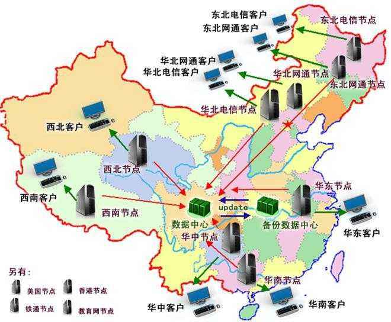
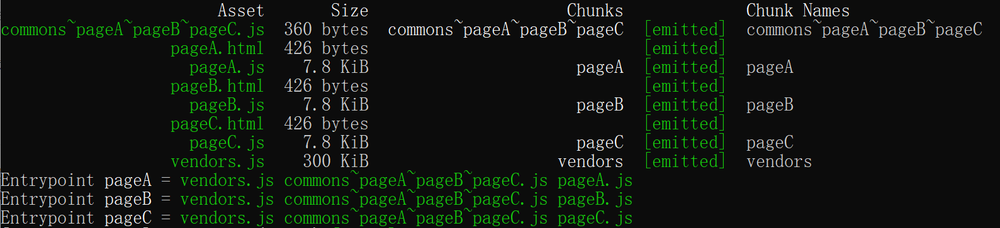

1. purgecss-webpack-plugin #
- purgecss
- 可以去除未使用的 css，一般与 glob、glob-all 配合使用
- 必须和
mini-css-extract-plugin配合使用 paths路径是绝对路径
npm i -D purgecss-webpack-plugin mini-css-extract-plugin glob
webpack.config.js
+ const glob = require('glob');
+ const PurgecssPlugin = require('purgecss-webpack-plugin');
module.exports = {
mode: 'development',
plugins: [
+ new PurgecssPlugin({
+ paths: glob.sync(`${path.join(__dirname, 'src')}/**/*`
+ }),
],
}
plugins: [
+ new MiniCssExtractPlugin({
+ filename: '[name].css',
+ chunkFilename:'[id].css'
+ }),
{
test: /\.css/,
include: path.resolve(__dirname,'src'),
exclude: /node_modules/,
use: [{
+ loader: MiniCssExtractPlugin.loader
},'css-loader']
}
2.DLL #
.dll为后缀的文件称为动态链接库，在一个动态链接库中可以包含给其他模块调用的函数和数据- 把基础模块独立出来打包到单独的动态连接库里
- 当需要导入的模块在动态连接库里的时候，模块不能再次被打包，而是去动态连接库里获取
- dll-plugin
2.1 定义Dll #
- DllPlugin插件： 用于打包出一个个动态连接库
- DllReferencePlugin: 在配置文件中引入DllPlugin插件打包好的动态连接库
const path=require('path');
const DllPlugin=require('webpack/lib/DllPlugin');
module.exports={
entry: {
react:['react','react-dom']
},// 把 React 相关模块的放到一个单独的动态链接库
output: {
path: path.resolve(__dirname,'dist'),// 输出的文件都放到 dist 目录下
filename: '[name].dll.js',//输出的动态链接库的文件名称，[name] 代表当前动态链接库的名称
library: '_dll_[name]',//存放动态链接库的全局变量名称,例如对应 react 来说就是 _dll_react
},
plugins: [
new DllPlugin({
// 动态链接库的全局变量名称，需要和 output.library 中保持一致
// 该字段的值也就是输出的 manifest.json 文件 中 name 字段的值
// 例如 react.manifest.json 中就有 "name": "_dll_react"
name: '_dll_[name]',
// 描述动态链接库的 manifest.json 文件输出时的文件名称
path: path.join(__dirname, 'dist', '[name].manifest.json')
})
]
}
webpack --config webpack.dll.config.js --mode development
2.2 使用动态链接库文件 #
const DllReferencePlugin = require('webpack/lib/DllReferencePlugin')
plugins: [
new DllReferencePlugin({
manifest:require('./dist/react.manifest.json')
})
]
webpack --config webpack.config.js --mode development
2.3 html中使用 #
<script src="react.dll.js"></script>
<script src="bundle.js"></script>
3. 多进程处理 #
3.1 thread-loader #
- 把这个 loader 放置在其他 loader 之前， 放置在这个 loader 之后的 loader 就会在一个单独的 worker 池(worker pool)中运行
- thread-loader
{
test: /\.(js)$/,
use: [
{
loader:'thread-loader',
options:{
workers:3
}
},
{
loader:'babel-loader'
}
],
}
4. CDN #
- qiniu
- CDN 又叫内容分发网络，通过把资源部署到世界各地，用户在访问时按照就近原则从离用户最近的服务器获取资源，从而加速资源的获取速度。

- HTML文件不缓存，放在自己的服务器上，关闭自己服务器的缓存，静态资源的URL变成指向CDN服务器的地址
- 静态的JavaScript、CSS、图片等文件开启CDN和缓存，并且文件名带上HASH值
- 为了并行加载不阻塞，把不同的静态资源分配到不同的CDN服务器上
4.1 使用缓存 #
- 由于 CDN 服务一般都会给资源开启很长时间的缓存，例如用户从 CDN 上获取到了 index.html 这个文件后， 即使之后的发布操作把 index.html 文件给重新覆盖了，但是用户在很长一段时间内还是运行的之前的版本，这会新的导致发布不能立即生效 解决办法
- 针对 HTML 文件：不开启缓存，把 HTML 放到自己的服务器上，而不是 CDN 服务上，同时关闭自己服务器上的缓存。自己的服务器只提供 HTML 文件和数据接口。
- 针对静态的 JavaScript、CSS、图片等文件：开启 CDN 和缓存，上传到 CDN 服务上去，同时给每个文件名带上由文件内容算出的 Hash 值
- 带上 Hash 值的原因是文件名会随着文件内容而变化，只要文件发生变化其对应的 URL 就会变化，它就会被重新下载，无论缓存时间有多长。
- 启用CDN之后 相对路径，都变成了绝对的指向 CDN 服务的 URL 地址
4.2 域名限制 #
- 同一时刻针对同一个域名的资源并行请求是有限制
- 可以把这些静态资源分散到不同的 CDN 服务上去
- 多个域名后会增加域名解析时间
- 可以通过在 HTML HEAD 标签中 加入
<link rel="dns-prefetch" href="http://img.zhufengpeixun.cn">去预解析域名，以降低域名解析带来的延迟
4.3 接入CDN #
要给网站接入 CDN，需要把网页的静态资源上传到 CDN 服务上去，在服务这些静态资源的时候需要通过 CDN 服务提供的 URL 地址去访问
output: {
path: path.resolve(__dirname, 'dist'),
+ filename: '[name]_[hash:8].js',
+ publicPath: 'http://img.zhufengpeixun.cn'
},
5.Tree Shaking #
- 一个模块可以有多个方法，只要其中某个方法使用到了，则整个文件都会被打到bundle里面去，tree shaking就是只把用到的方法打入bundle,没用到的方法会uglify阶段擦除掉
- 原理是利用es6模块的特点,只能作为模块顶层语句出现,import的模块名只能是字符串常量
5.1 开启 #
- webpack默认支持，在.babelrc里设置
module:false即可在production mode下默认开启 - 还要注意把devtool设置为null
.babelrc
"presets":[
+ ["@babel/preset-env",{"modules":false}],//转译 ES6 ES7
"@babel/preset-react"//转译JSX语法
],
5.2 没有导入和使用 #
functions.js
function func1(){
return 'func1';
}
function func2(){
return 'func2';
}
export {
func1,
func2
}
import {func2} from './functions';
var result2 = func2();
console.log(result2);
5.3 代码不会被执行，不可到达 #
if(false){
console.log('false')
}
5.4 代码执行的结果不会被用到 #
import {func2} from './functions';
func2();
5.4 代码中只写不读的变量 #
var aabbcc='aabbcc';
aabbcc='eeffgg';
6.代码分割 #
6.1 代码分割的意义 #
- 对于大的Web应用来讲，将所有的代码都放在一个文件中显然是不够有效的，特别是当你的某些代码块是在某些特殊的时候才会被用到。
- webpack有一个功能就是将你的代码库分割成chunks语块，当代码运行到需要它们的时候再进行加载。 适用的场景
- 抽离相同代码到一个共享块
- 脚本懒加载，使得初始下载的代码更小
6.2 Entry Points #
- Entry Points：入口文件设置的时候可以配置
- 这种方法的问题
- 如果入口 chunks 之间包含重复的模块(lodash)，那些重复模块都会被引入到各个 bundle 中
- 不够灵活，并且不能将核心应用程序逻辑进行动态拆分代码
entry: {
index: "./src/index.js",
login: "./src/login.js"
}
6.2 动态导入和懒加载 #
- 用户当前需要用什么功能就只加载这个功能对应的代码，也就是所谓的按需加载 在给单页应用做按需加载优化时，一般采用以下原则：
- 对网站功能进行划分，每一类一个chunk
- 对于首次打开页面需要的功能直接加载，尽快展示给用户,某些依赖大量代码的功能点可以按需加载
- 被分割出去的代码需要一个按需加载的时机
hello.js
module.exports = "hello";
index.js
document.querySelector('#clickBtn').addEventListener('click',() => {
import('./hello').then(result => {
console.log(result.default);
});
});
index.html
<button id="clickBtn">点我</button>
6.3 提取公共代码 #
6.1 为什么需要提取公共代码 #
大网站有多个页面，每个页面由于采用相同技术栈和样式代码，会包含很多公共代码，如果都包含进来会有问题
- 相同的资源被重复的加载，浪费用户的流量和服务器的成本；
- 每个页面需要加载的资源太大，导致网页首屏加载缓慢，影响用户体验。
- 如果能把公共代码抽离成单独文件进行加载能进行优化，可以减少网络传输流量，降低服务器成本
6.2 如何提取 #
- 基础类库，方便长期缓存
- 页面之间的公用代码
- 各个页面单独生成文件
- 文档
- common-chunk-and-vendor-chunk
- webpack将会基于以下条件自动分割代码块:
- 新的代码块被共享或者来自node_modules文件夹
- 新的代码块大于30kb(在min+giz之前)
- 按需加载代码块的请求数量应该<=5
- 页面初始化时加载代码块的请求数量应该<=3
默认配置
optimization: {
splitChunks: {
chunks: "all",//默认作用于异步chunk，值为all/initial/async
minSize: 30000, //默认值是30kb,代码块的最小尺寸
minChunks: 1, //被多少模块共享,在分割之前模块的被引用次数
maxAsyncRequests: 5, //按需加载最大并行请求数量
maxInitialRequests: 3, //一个入口的最大并行请求数量
name: true, //打包后的名称，默认是chunk的名字通过分隔符（默认是～）分隔开，如vendor~
automaticNameDelimiter: '~',//默认webpack将会使用入口名和代码块的名称生成命名,比如 'vendors~main.js'
cacheGroups: { //设置缓存组用来抽取满足不同规则的chunk,下面以生成common为例
vendors: {
chunks: "initial",
test: /node_modules/,//条件
priority: -10 ///优先级，一个chunk很可能满足多个缓存组，会被抽取到优先级高的缓存组中,为了能够让自定义缓存组有更高的优先级(默认0),默认缓存组的priority属性为负值.
},
commons: {
chunks: "initial",
minSize: 0,//最小提取字节数
minChunks: 2, //最少被几个chunk引用
priority: -20,
reuseExistingChunk: true// 如果该chunk中引用了已经被抽取的chunk，直接引用该chunk，不会重复打包代码
}
}
},
}
6.3 提取公共代码 #
pageA.js
import utils1 from './utils1';
import utils2 from './utils2';
import $ from 'jquery';
console.log(utils1,utils2,$);
pageB.js
import utils1 from './utils1';
import utils2 from './utils2';
import $ from 'jquery';
console.log(utils1,utils2,$);;
pageC.js
import utils3 from './utils3';
import utils1 from './utils1';
import $ from 'jquery';
console.log(utils1,utils3,$);
utils1.js
utils2.js
utils3.js
webpack.config.js
entry: {
pageA: './src/pageA',
pageB: './src/pageB',
pageC: './src/pageC'
},
output: {
path: path.resolve(__dirname,'dist'),
filename: '[name].js'
},
plugins:[
new HtmlWebpackPlugin({
template: './src/index.html',
filename: 'pageA.html',
excludeChunks: ['pageB','pageC']
}),
new HtmlWebpackPlugin({
template: './src/index.html',
filename: 'pageB.html',
excludeChunks: ['pageA','pageC']
}),
new HtmlWebpackPlugin({
template: './src/index.html',
filename: 'pageC.html',
excludeChunks: ['pageA','pageB']
})
]

7.开启 Scope Hoisting #
- Scope Hoisting 可以让 Webpack 打包出来的代码文件更小、运行的更快， 它又译作 "作用域提升"，是在 Webpack3 中新推出的功能。
- 初webpack转换后的模块会包裹上一层函数,import会转换成require
- 代码体积更小，因为函数申明语句会产生大量代码
- 代码在运行时因为创建的函数作用域更少了，内存开销也随之变小
- 大量作用域包裹代码会导致体积增大
- 运行时创建的函数作用域变多，内存开销增大
- scope hoisting的原理是将所有的模块按照引用顺序放在一个函数作用域里，然后适当地重命名一些变量以防止命名冲突
- 这个功能在mode为production下默认开启,开发环境要用
webpack.optimize.ModuleConcatenationPlugin插件 - 也要使用ES6 Module,CJS不支持
7.1 开发环境插件配置 #
module.exports = {
resolve: {
// 针对 Npm 中的第三方模块优先采用 jsnext:main 中指向的 ES6 模块化语法的文件
mainFields: ['jsnext:main', 'browser', 'main']
},
plugins: [
// 开启 Scope Hoisting
new webpack.optimize.ModuleConcatenationPlugin(),
],
};
7.2 代码 #
hello.js
export default 'Hello';
index.js
import str from './hello.js';
console.log(str);
输出的结果main.js
"./src/index.js":
(function(module, __webpack_exports__, __webpack_require__) {
__webpack_require__.r(__webpack_exports__);
var hello = ('hello');
console.log(hello);
})
函数由两个变成了一个，hello.js 中定义的内容被直接注入到了 main.js 中
8. 用 HMR 提高开发效率 #
- HMR 全称是 Hot Module Replacement，即模块热替换
- Hot Reloading，当代码变更时通知浏览器刷新页面，以避免频繁手动刷新浏览器页面
- HMR 可以理解为增强版的 Hot Reloading，但不用整个页面刷新，而是局部替换掉部分模块代码并且使其生效
- 原理是当一个源码发生变化时，只重新编译发生变化的模块，再用新输出的模块替换掉浏览器中对应的老模块
- 模块热替换技术的优势有：
- 实时预览反应更快，等待时间更短。
- 不刷新浏览器能保留当前网页的运行状态，例如在使用 Redux 来管理数据的应用中搭配模块热替换能做到代码更新时Redux 中的数据还保持不变
8.1 模块热替换原理 #
- 模块热替换的原理和自动刷新原理类似，都需要往要开发的网页中注入一个代理客户端用于连接 DevServer 和网页

8.2 配置 #
8.2.1 配置hot #
- DevServer 默认不会开启模块热替换模式，要开启该模式，只需在启动时带上参数
--hotconst webpack = require('webpack'); module.exports = { entry:{ main:'./src/index.js', }, plugins: [ // 该插件的作用就是实现模块热替换，实际上当启动时带上 `--hot` 参数，会注入该插件，生成 .hot-update.json 文件。 new webpack.NamedModulesPlugin(), // 用于启动 HMR 时可以显示模块的相对路径 new webpack.HotModuleReplacementPlugin(), // Hot Module Replacement 的插件 ], devServer:{ // 告诉 DevServer 要开启模块热替换模式 hot: true, } };在启动 Webpack 时带上参数 --hot 其实就是自动为你完成以上配置。
8.2.2 代码实现 #
import React from 'react';
import { render } from 'react-dom';
import App from './App';
import './index.css';
render(<App/>, document.getElementById('root'));
// 只有当开启了模块热替换时 module.hot 才存在
if (module.hot) {
// accept 函数的第一个参数指出当前文件接受哪些子模块的替换，这里表示只接受 ./AppComponent 这个子模块
// 第2个参数用于在新的子模块加载完毕后需要执行的逻辑
module.hot.accept(['./App'], () => {
// 新的 AppComponent 加载成功后重新执行下组建渲染逻辑
let App=require('./App').default;
render(<App/>, document.getElementById('root'));
});
}
- module.hot 是当开启模块热替换后注入到全局的 API，用于控制模块热替换的逻辑
- 当子模块发生更新时，更新事件会一层层往上传递，也就是从
App.js文件传递到index.js文件， 直到有某层的文件接受了当前变化的模块 - 如果事件一直往上抛到最外层都没有文件接受它，就会直接刷新网页
.css文件都会触发模块热替换的原因是style-loader会注入用于接受 CSS 的代码